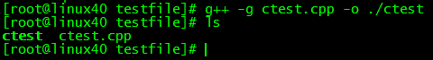
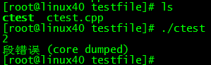
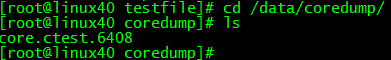
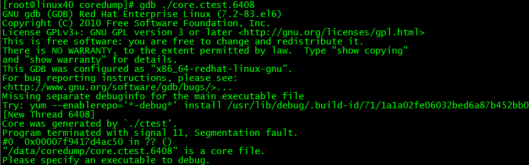
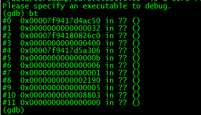
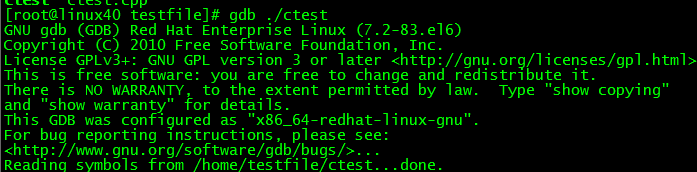
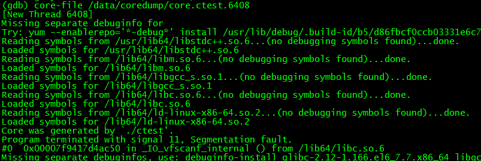
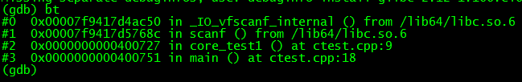

Windows环境崩溃问题可根据vs调试工具查看，Linux同样可以查看调用堆栈的信息，只是
需要更改Linux设置，使程序崩溃时候产生core文件。然后gdb调试即可。
1产生core文件方法
产生coredump的条件，首先需要确认当前会话的ulimit –c，若为0，则不会产生对应的coredump，需要进行修改和设置。
ulimit -c unlimited (可以产生coredump且不受大小限制)，这种设置仅对当前生效，如果想永久生效
那么需要在
/etc/profile中加入以下一行，这将允许生成coredump文件
ulimit-c unlimited
2更改core dump生成路径
因为core dump默认会生成在程序的工作目录，但是有些程序存在切换目录的情况，导致core dump生成的路径没有规律，
所以最好是自己建立一个文件夹，存放生成的core文件。
我建立一个 /data/coredump 文件夹，在根目录data里的coredump文件夹。
调用如下命令
echo /data/coredump/core.%e.%p> /proc/sys/kernel/core_pattern
将更改core文件生成路径，自动放在这个/data/coredump文件夹里。
%e表示程序名， %p表示进程id
3测试生成core文件以及调试
1 |
|
该程序在core_test1()内部scanf的时候回崩溃，i前面应该加上&
编译的时候带上-g选项，这样才能用gdb调试core

运行后结果显示段错误

进入/data/coredump文件夹可以查看生成的core

用gdb调试该core，命令为 gdb core.ctest.6408 ,显示如下

program terminated with signal 11 告诉我们信号中断了我们的程序
敲命令： bt 可以打印堆栈信息

这个一堆问号很多人遇到过，有人说是没加载符号表，有人说是标准glibc版本不一致，
可以通过如下命令调试：
gdb 可执行程序exe
进入gdb环境后
core-file core的名字
敲命令bt可以查看准确信息。
示例：
gdb ./ctest

进入gdb环境后，敲core-file /data/coredump/core.ctest.6408

敲bt命令，这是gdb查看back trace的命令

可以看到最近的栈中存储的是调用了IO操作，之前一步是scanf，再往前能看到是
ctest.cpp中第九行 core_test1()函数出错。
到此为止，就是core文件配置生成和调试方法
关注我的公众号：